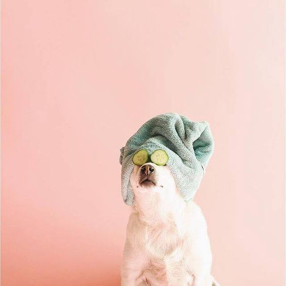

.jpg)
O cachorro é considerado o amigo mais velho do homem e que segundo estudos, esta parceria já se ultrapassou por 30.000 anos! Os cães são conhecidos por serem companheiros leais e afetuosos. Eles estão sempre presentes, prontos para oferecer amor, apoio emocional e companhia. A presença de um cão pode reduzir o estresse, diminuir a pressão arterial, melhorar o sistema imunológico e até mesmo ajudar no tratamento de condições como ansiedade e depressão.Além disso, Ter um cachorro pode ensinar importantes valores, como responsabilidade, paciência, empatia e respeito pelos seres vivos.
“O único amigo absoluto e altruísta que o homem pode ter neste mundo egoísta - aquele que nunca se mostra ingrato ou traiçoeiro - é seu cachorro.
George Graham
Selecione o porte do cachorro
Dicas para os donos
Passear com seu cachorro

Exponha seu cachorro a diferentes ambientes, pessoas e outros animais desde filhote. Isso ajudará a evitar problemas comportamentais no futuro e tornará seu cachorro mais confiante e sociável.
Higiene
Mantenha a higiene do seu cachorro em dia, incluindo banhos regulares, escovação dos pelos, limpeza dos ouvidos e corte das unhas. Isso ajudará a prevenir problemas de pele, infecções e desconfortos.
Alimentação adequada
Consulte um veterinário para garantir que a alimentação do seu cão seja balanceada e atenda às suas necessidades nutricionais específicas. Evite alimentar seu cachorro com alimentos prejudiciais à saúde, como chocolate, uvas ou cebola.
Muito amor e carinho

Por último, mas não menos importante, lembre-se de demonstrar amor e carinho ao seu cachorro. Eles são leais e devotados, e retribuir esse amor ajudará a fortalecer o vínculo entre vocês.